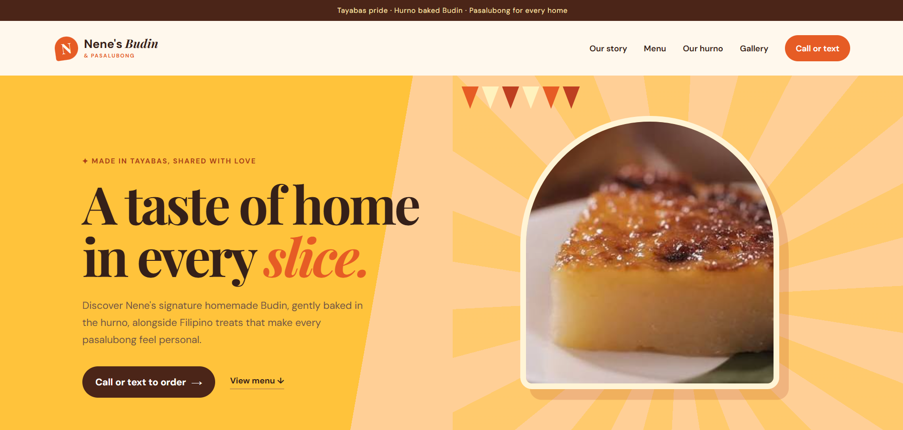

Responsive web designNene's Budin
01A responsive website concept for a Tayabas Budin shop, designed to present its heritage, products and ordering paths with clarity.
Role Web Designer and Front End Developer
Focus Brand expression, content hierarchy and responsive browsing
Status Portfolio project
Design approach
I used rich orange, sunny yellow and warm cream to echo a Filipino fiesta. Editorial serif headlines bring heritage and personality, while rounded cards and strong calls to action keep the experience friendly and easy to navigate.
Thoughtful details
Sunburst patterns, bunting and the illustrated hurno give the website a sense of place. Product photography and simple contact actions keep the focus on the food and make ordering feel personal.